Chapter 6 Normalisation
Why normalise?
Systematic differences in sequencing coverage between libraries caused by low input material, differences in cDNA capture and PCR amplification. Normalisation removes such differences so that differences between cells are not technical but biological, allowing meaningful comparison of expression profiles between cells.
TODO difference between normalisation and batch correction. norm: technical differences only. batch correction: technical and biological. different assumptions and methods.
In scaling normalization, the “normalization factor” is an estimate of the library size relative to the other cells. steps: compute a cell-specific ‘scaling’ or ‘size’ factor that represents the relative bias in that cell and divide all counts for the cell by that factor to remove that bias. Assumption: any cell specific bias will affect genes the same way.
Scaling methods typically generate normalised counts-per-million (CPM) or transcripts-per-million (TPM_ values.
projDir <- params$projDir
dirRel <- params$dirRel
outDirBit <- params$outDirBit
compuBool <- TRUE # whether to run computation again (dev)
#qcPlotDirBit <- "Plots/Norm"6.1 Caron
Load object.
setName <- "caron"
setSuf = "_allCells" # suffix to add to file name to say all cells are used, with no downsampling
# Read object in:
tmpFn <- sprintf("%s/%s/Robjects/%s_sce_nz_postQc%s.Rds",
projDir, outDirBit, setName, setSuf)
sce <- readRDS(tmpFn)6.1.1 Library size normalization
For each cell, the library size factor is proportional to the library size such that the average size factor across cell is one.
Advantage: normalised counts are on the same scale as the initial counts.
Compute size factors:
## Min. 1st Qu. Median Mean 3rd Qu. Max.
## 0.1205 0.4432 0.7308 1.0000 1.2859 14.4562Size factor distribution: wide range, typical of scRNA-seq data.
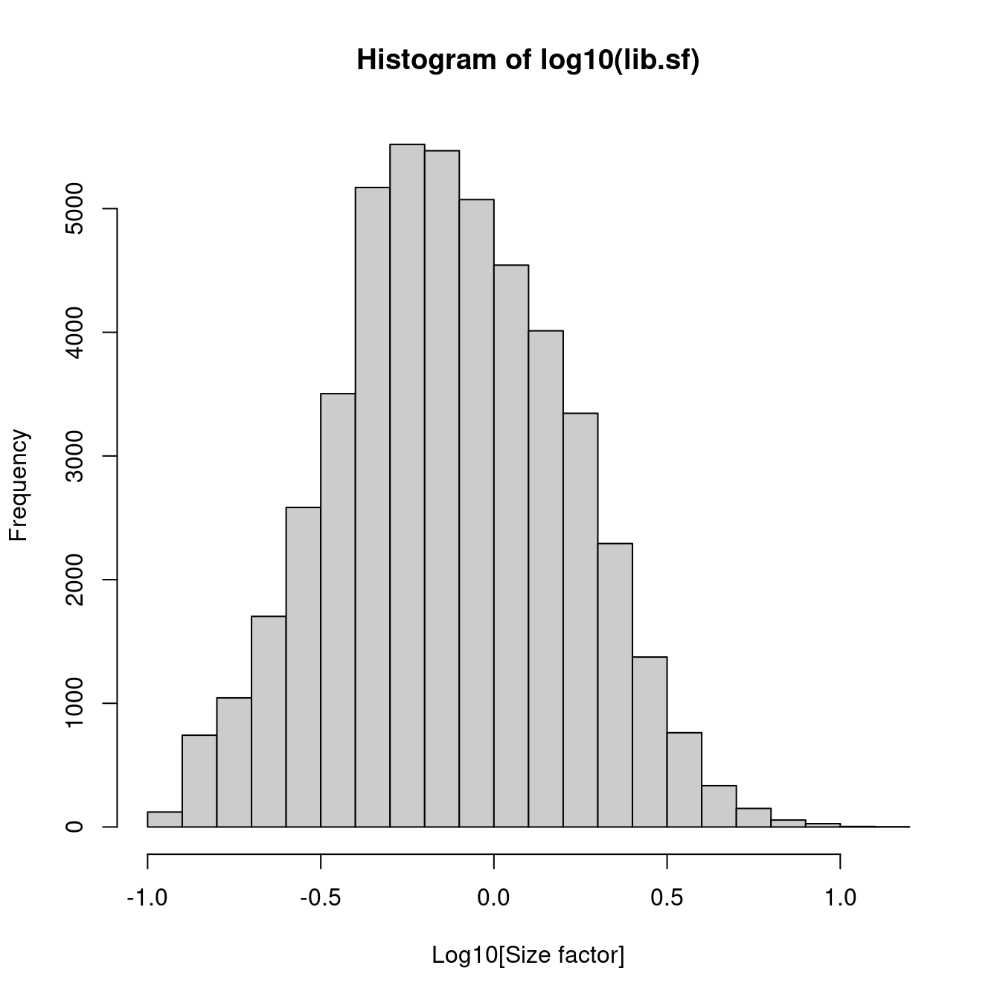
Assumption: absence of compositional bias; differential expression two cells is balanced: upregulation in some genes is accompanied by downregulation of other genes. Not observed.
Inaccurate normalisation due to unaccounted-for composition bias affects the size of the log fold change measured between clusters, but less so the clustering itself. It is thus sufficient to identify clusters and top marker genes.
6.1.2 Deconvolution
Composition bias occurs when differential expression beteween two samples or here cells is not balanced. For a fixed library size, identical in both cells, upregulation of one gene in the a cell will means fewer UMIs can be assigned to other genes, which would then appear down regulated. Even if library sizes are allowed to differ in size, with that for the cell with upregulation being higher, scaling normalisation will reduce noralised counts. Non-upregulated would therefore also appear downregulated.
For bulk RNA-seq, composition bias is removed by assuming that most genes are not differentially expressed between samples, so that differences in non-DE genes would amount to the bias, and used to compute size factors.
Given the sparsity of scRNA-seq data, the methods are not appropriate.
The method below increases read counts by pooling cells into groups, computing size factors within each of these groups and scaling them so they are comparable across clusters. This process is repeated many times, changing pools each time to collect several size factors for each cell, frome which is derived a single value for that cell.
Cluster cells, normalise :
set.seed(100) # clusters with PCA from irlba with approximation
clust <- quickCluster(sce) # slow with all cells.
# write to file
tmpFn <- sprintf("%s/%s/Robjects/%s_sce_nz_quickClus%s.Rds",
projDir, outDirBit, setName, setSuf)
saveRDS(clust, tmpFn)# read from file
tmpFn <- sprintf("%s/%s/Robjects/%s_sce_nz_quickClus%s.Rds",
projDir, outDirBit, setName, setSuf)
clust <- readRDS(tmpFn)
table(clust)## clust
## 1 2 3 4 5 6 7 8 9 10 11 12 13 14 15 16
## 1557 5519 3149 602 2106 374 2389 1788 1378 4815 923 1846 5575 1989 108 1657
## 17 18 19 20 21 22 23 24 25
## 701 1882 5053 1420 278 714 802 1049 1566.1.3 Compute size factors
deconv.sf <- calculateSumFactors(sce, cluster=clust)
# write to file
tmpFn <- sprintf("%s/%s/Robjects/%s_sce_nz_deconvSf%s.Rds",
projDir, outDirBit, setName, setSuf)
saveRDS(deconv.sf, tmpFn)# read from file
tmpFn <- sprintf("%s/%s/Robjects/%s_sce_nz_deconvSf%s.Rds",
projDir, outDirBit, setName, setSuf)
deconv.sf <- readRDS(tmpFn)
summary(deconv.sf)## Min. 1st Qu. Median Mean 3rd Qu. Max.
## 0.03169 0.41551 0.73178 1.00000 1.30221 15.27223Plot size factors:
plot(lib.sf,
deconv.sf,
xlab="Library size factor",
ylab="Deconvolution size factor",
log='xy',
pch=16,
col=as.integer(factor(sce$source_name)))
abline(a=0, b=1, col="red")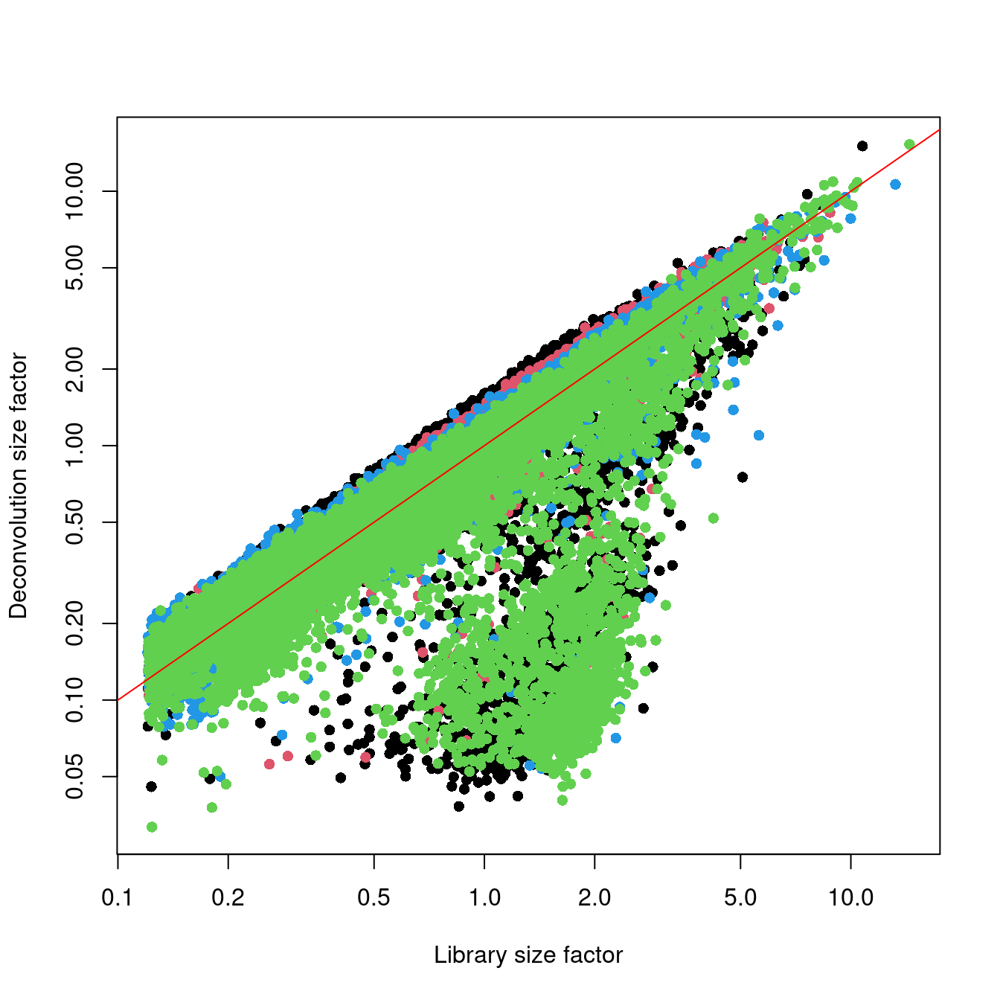
deconvDf <- data.frame(lib.sf,
deconv.sf,
"source_name" = sce$source_name,
"sum" = sce$sum,
"mito_content" = sce$subsets_Mito_percent,
"cell_sparsity" = sce$cell_sparsity)
# colour by sample type
sp <- ggplot(deconvDf, aes(x=lib.sf, y=deconv.sf, col=source_name)) +
geom_point()
sp + facet_wrap(~source_name)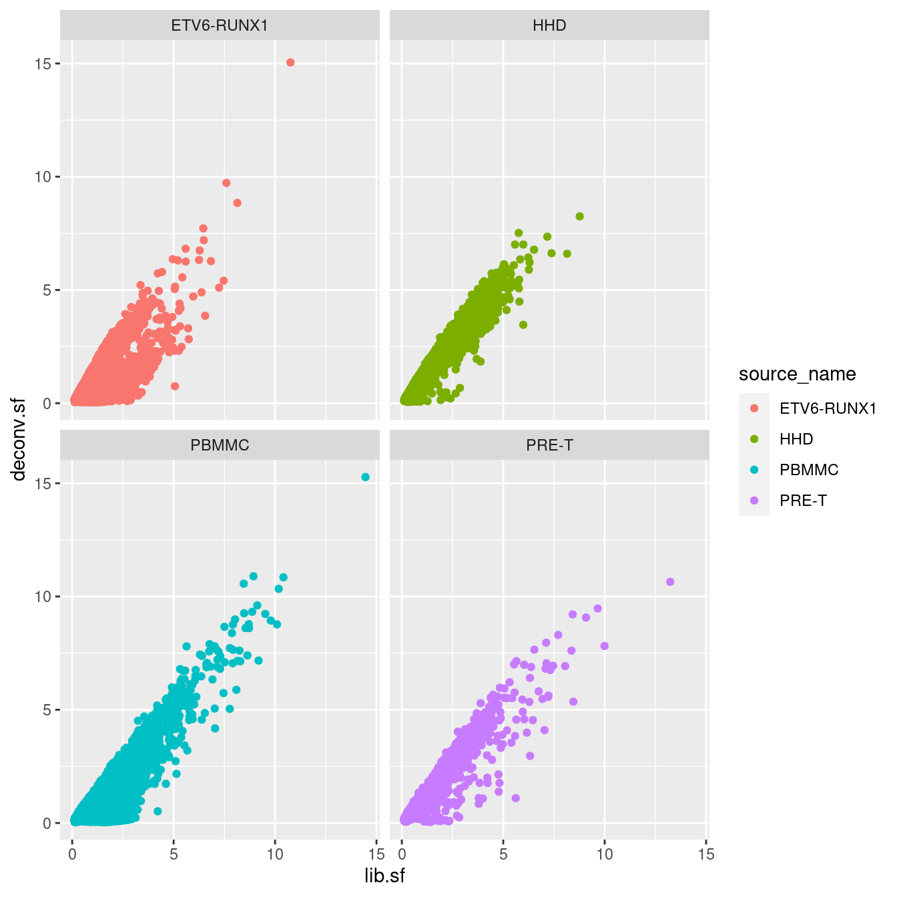
# colour by library size
sp <- ggplot(deconvDf, aes(x=lib.sf, y=deconv.sf, col=sum)) +
geom_point()
sp# colour by mito. content
sp <- ggplot(deconvDf, aes(x=lib.sf, y=deconv.sf, col=mito_content)) +
geom_point()
sp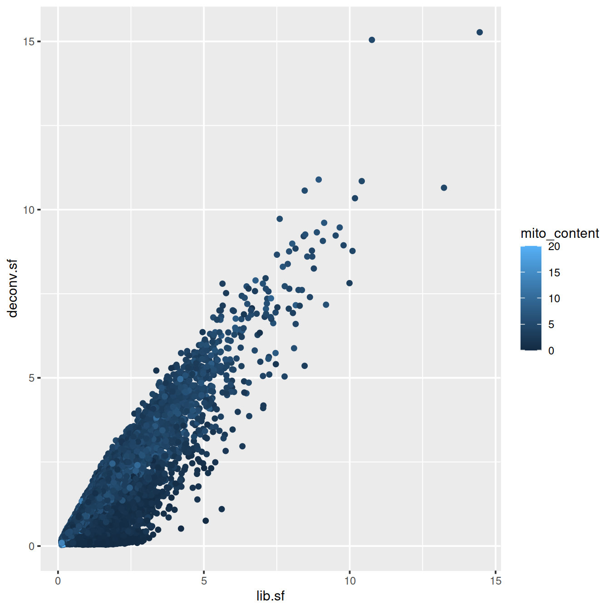
# colour by cell sparsity
sp <- ggplot(deconvDf, aes(x=lib.sf, y=deconv.sf, col=cell_sparsity)) +
geom_point()
sp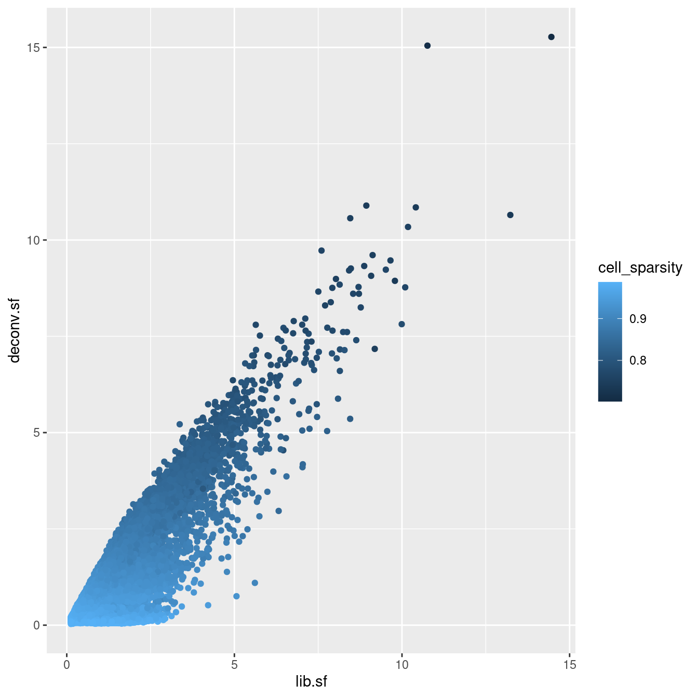
6.1.3.1 Apply size factors
For each cell, raw counts for genes are divided by the size factor for that cell and log-transformed so downstream analyses focus on genes with strong relative differences. We use scater::logNormCounts().
## [1] "counts" "logcounts"6.2 Hca
Load object.
# the 5kCellPerSpl subset
setName <- "hca"
setSuf <- "_5kCellPerSpl"
# Read object in:
tmpFn <- sprintf("%s/%s/Robjects/%s_sce_nz_postQc%s.Rds",
projDir, outDirBit, setName, setSuf)
sce <- readRDS(tmpFn)6.2.1 Library size normalization
For each cell, the library size factor is proportioanl to the library size such that the average size factor across cell is one.
Advantage: normalised counts are on the same scale as the initial counts.
Compute size factors:
## Min. 1st Qu. Median Mean 3rd Qu. Max.
## 0.3249 0.4916 0.6015 1.0000 0.8224 27.5849Size factor distribution: wide range, typical of scRNA-seq data.
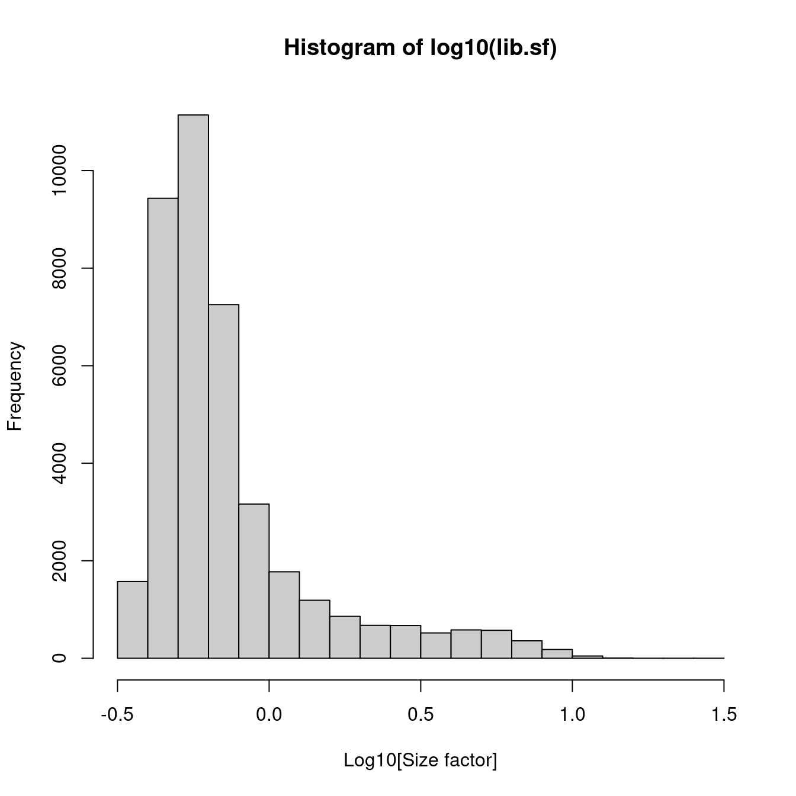
Assumption: absence of compositional bias; differential expression two cells is balanced: upregulation in some genes is accompanied by downregulation of other genes. Not observed.
Inaccurate normalisation due to unaccounted-for composition bias affects the size of the log fold change measured between clusters, but less so the clusterisation itself. It is thus sufficient to identify clustrs and top arker genes.
6.2.2 Deconvolution
Composition bias occurs when differential expression beteween two samples or here cells is not balanced. For a fixed library size, identical in both cells, upregulation of one gene in the a cell will means fewer UMIs can be assigned to other genes, which would then appear down regulated. Even if library sizes are allowed to differ in size, with that for the cell with upregulation being higher, scaling normalisation will reduce noralised counts. Non-upregulated would therefore also appear downregulated.
For bulk RNA-seq, composition bias is removed by assuming that most genes are not differentially expressed between samples, so that differences in non-DE genes would amount to the bias, and used to compute size factors.
Given the sparsity of scRNA-seq data, the methods are not appropriate.
The method below increases read counts by pooling cells into groups, computing size factors within each of these groups and scaling them so they are comparable across clusters. This process is repeated many times, changing pools each time to collect several size factors for each cell, frome which is derived a single value for that cell.
Cluster cells then normalise :
#library(scran)
set.seed(100) # clusters with PCA from irlba with approximation
clust <- quickCluster(sce) # slow with all cells.
# write to file
tmpFn <- sprintf("%s/%s/Robjects/%s_sce_nz_quickClus%s.Rds",
projDir, outDirBit, setName, setSuf)
saveRDS(clust, tmpFn)# read from file
tmpFn <- sprintf("%s/%s/Robjects/%s_sce_nz_quickClus%s.Rds",
projDir, outDirBit, setName, setSuf)
clust <- readRDS(tmpFn)
table(clust)## clust
## 1 2 3 4 5 6 7 8 9 10 11 12 13 14 15 16
## 1444 577 807 2116 3106 497 3973 613 1693 731 3655 9970 3136 225 3221 517
## 17 18 19 20 21 22 23 24 25
## 486 568 868 219 252 416 315 283 3126.2.3 Compute size factors
deconv.sf <- calculateSumFactors(sce, cluster=clust)
# write to file
tmpFn <- sprintf("%s/%s/Robjects/%s_sce_nz_deconvSf%s.Rds",
projDir, outDirBit, setName, setSuf)
saveRDS(deconv.sf, tmpFn)# read from file
tmpFn <- sprintf("%s/%s/Robjects/%s_sce_nz_deconvSf%s.Rds",
projDir, outDirBit, setName, setSuf)
deconv.sf <- readRDS(tmpFn)
summary(deconv.sf)## Min. 1st Qu. Median Mean 3rd Qu. Max.
## 0.0896 0.4112 0.5071 1.0000 0.7585 38.5010Plot size factors:
plot(lib.sf,
deconv.sf,
xlab="Library size factor",
ylab="Deconvolution size factor",
log='xy',
pch=16,
col=as.integer(factor(sce$source_name)))
abline(a=0, b=1, col="red")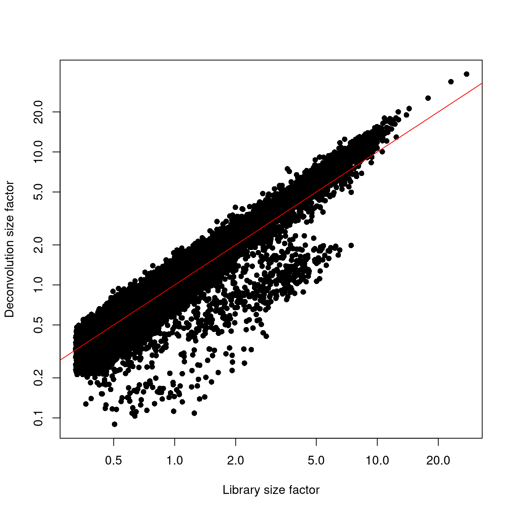
deconvDf <- data.frame(lib.sf, deconv.sf,
"source_name" = sce$source_name,
"sum" = sce$sum,
"mito_content" = sce$subsets_Mito_percent,
"cell_sparsity" = sce$cell_sparsity)
# colour by sample type
sp <- ggplot(deconvDf, aes(x=lib.sf, y=deconv.sf, col=source_name)) +
geom_point()
sp + facet_wrap(~source_name)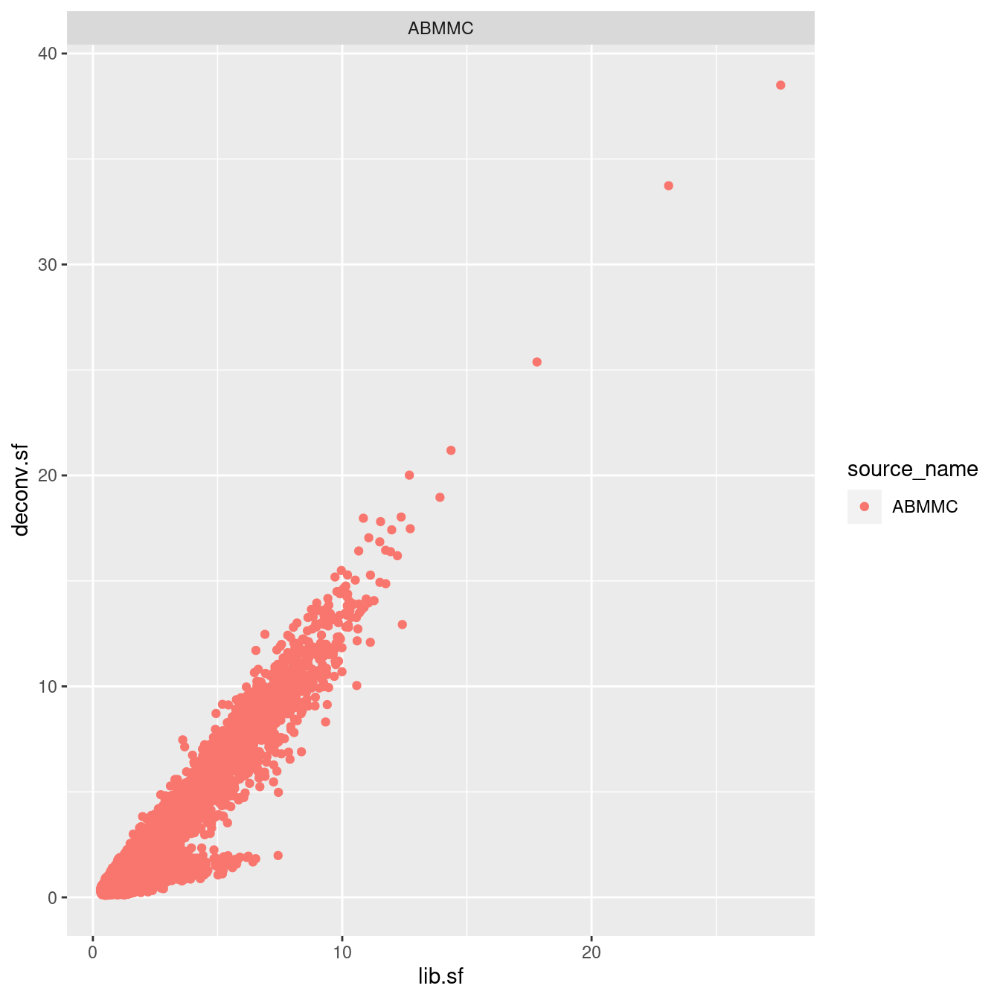
# colour by library size
sp <- ggplot(deconvDf, aes(x=lib.sf, y=deconv.sf, col=sum)) +
geom_point()
sp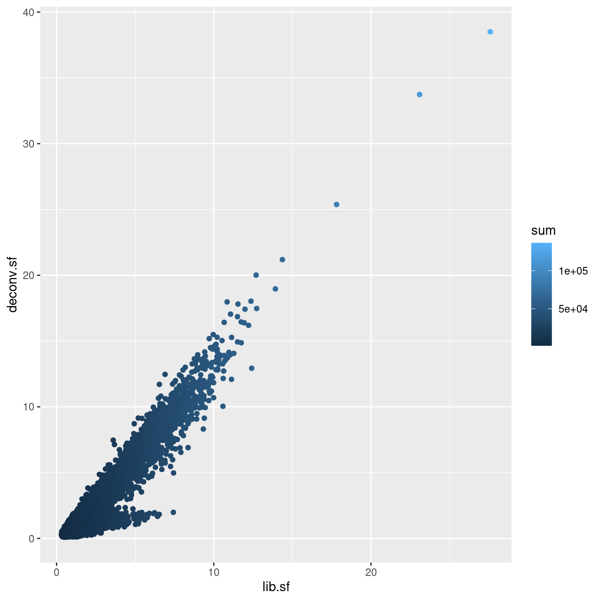
# colour by mito. content
sp <- ggplot(deconvDf, aes(x=lib.sf, y=deconv.sf, col=mito_content)) +
geom_point()
sp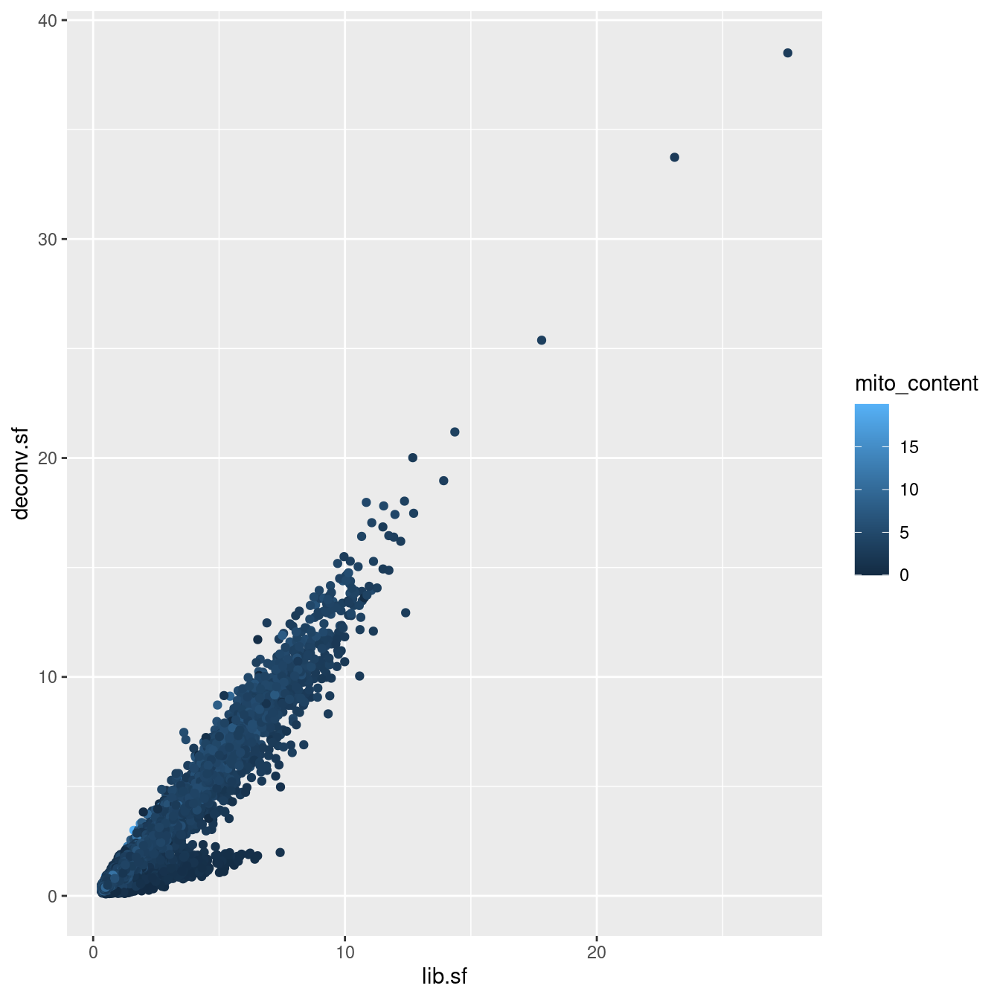
# colour by cell sparsity
sp <- ggplot(deconvDf, aes(x=lib.sf, y=deconv.sf, col=cell_sparsity)) +
geom_point()
sp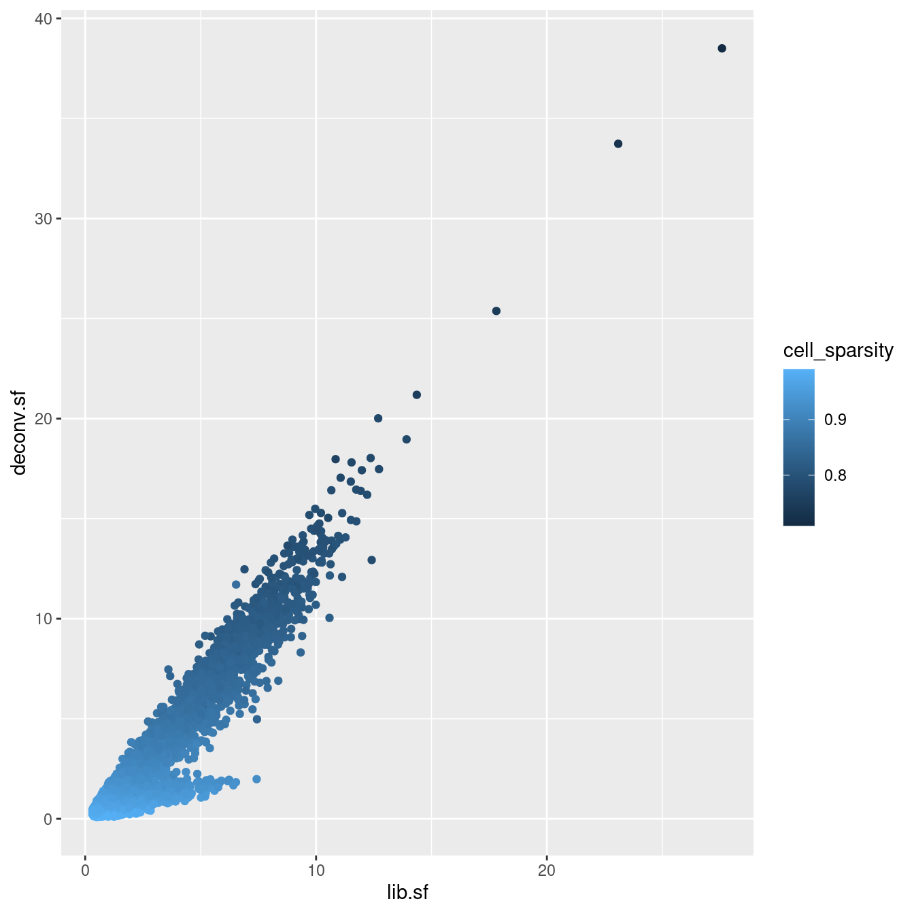
6.2.3.1 Apply size factors
For each cell, raw counts for genes are divided by the size factor for that cell and log-transformed so downstream analyses focus on genes with strong relative differences. We use scater::logNormCounts().
## [1] "counts" "logcounts"6.3 SCTransform
With scaling normalisation a correlation remains between the mean and variation of expression (heteroskedasticity). This affects downstream dimensionality reduction as the few main new dimensions are usually correlated with library size. SCTransform addresses the issue by regressing library size out of raw counts and providing residuals to use as normalized and variance-stabilized expression values in downstream analysis.
6.3.1 Caron
setName <- "caron"
setSuf = "_allCells" # suffix to add to file name to say which cells are used, eg downsampling
sce <- sce_caron
counts <- counts(sce)
class(counts)## [1] "dgCMatrix"
## attr(,"package")
## [1] "Matrix"Inspect data
We will now calculate some properties and visually inspect the data. Our main interest is in the general trends not in individual outliers. Neither genes nor cells that stand out are important at this step, but we focus on the global trends.
Derive gene and cell attributes from the UMI matrix.
gene_attr <- data.frame(mean = rowMeans(counts),
detection_rate = rowMeans(counts > 0),
var = apply(counts, 1, var))
gene_attr$log_mean <- log10(gene_attr$mean)
gene_attr$log_var <- log10(gene_attr$var)
rownames(gene_attr) <- rownames(counts)
cell_attr <- data.frame(n_umi = colSums(counts),
n_gene = colSums(counts > 0))
rownames(cell_attr) <- colnames(counts)ggplot(gene_attr, aes(log_mean, log_var)) +
geom_point(alpha=0.3, shape=16) +
geom_density_2d(size = 0.3) +
geom_abline(intercept = 0, slope = 1, color='red')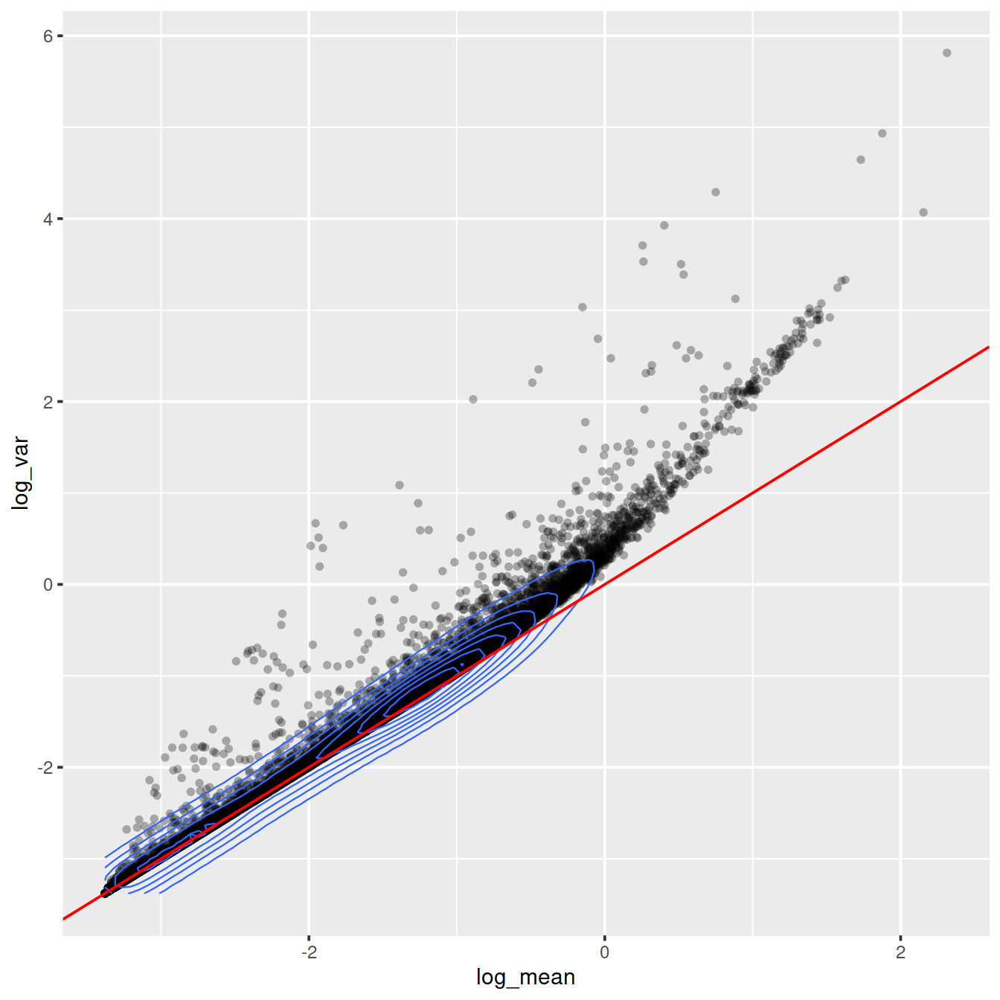
Mean-variance relationship
For the genes, we can see that up to a mean UMI count of ca. 0.1 the variance follows the line through the origin with slop one, i.e. variance and mean are roughly equal as expected under a Poisson model. However, genes with a higher average UMI count show overdispersion compared to Poisson.
# add the expected detection rate under Poisson model
x = seq(from = -3, to = 2, length.out = 1000)
poisson_model <- data.frame(log_mean = x,
detection_rate = 1 - dpois(0, lambda = 10^x))
ggplot(gene_attr, aes(log_mean, detection_rate)) +
geom_point(alpha=0.3, shape=16) +
geom_line(data=poisson_model, color='red') +
theme_gray(base_size = 8)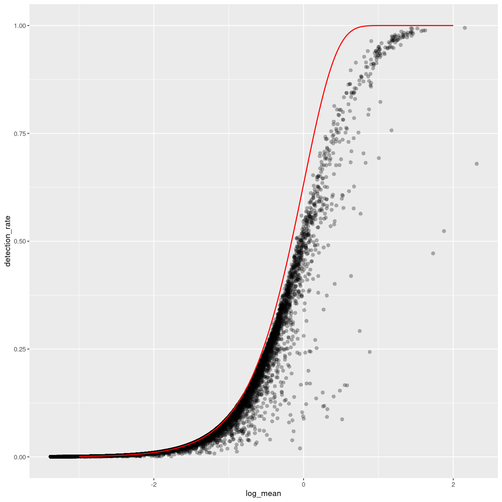
Mean-detection-rate relationship
In line with the previous plot, we see a lower than expected detection rate in the medium expression range. However, for the highly expressed genes, the rate is at or very close to 1.0 suggesting that there is no zero-inflation in the counts for those genes and that zero-inflation is a result of overdispersion, rather than an independent systematic bias.
ggplot(cell_attr, aes(n_umi, n_gene)) +
geom_point(alpha=0.3, shape=16) +
geom_density_2d(size = 0.3)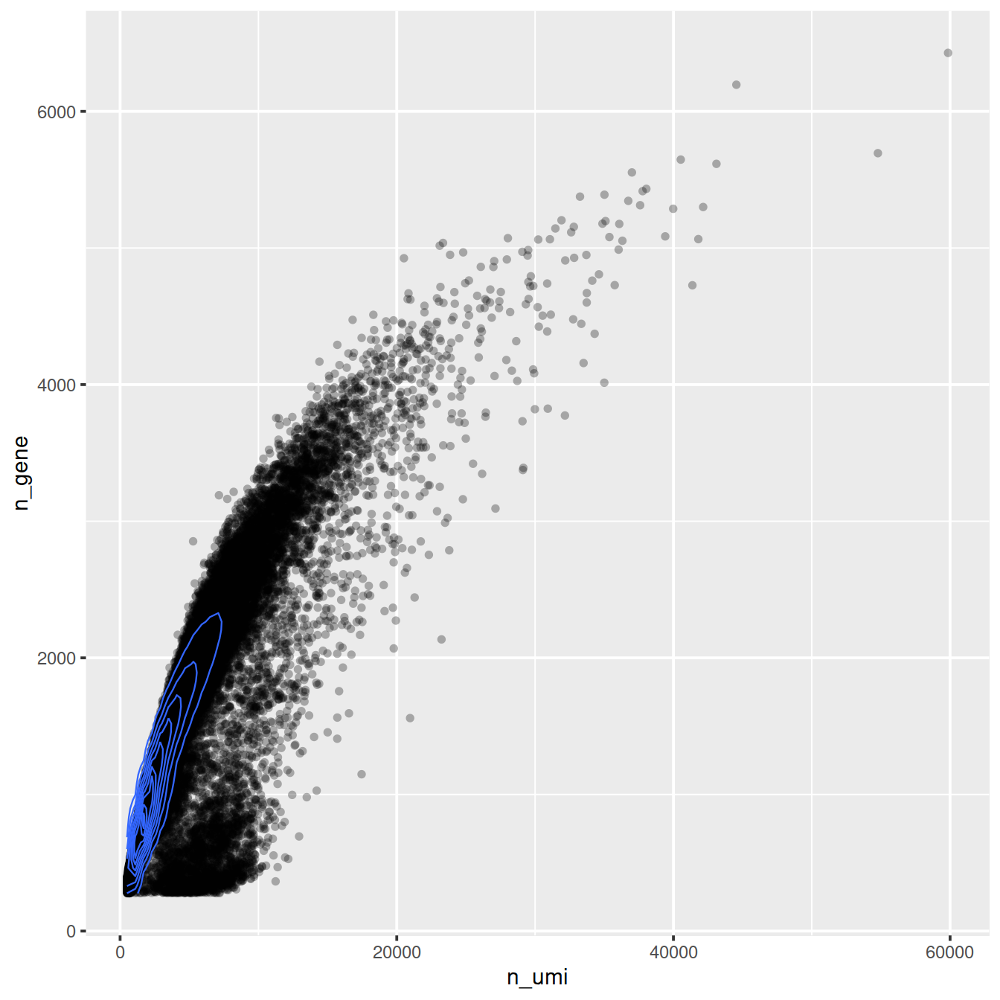
General idea of transformation
Based on the observations above, which are not unique to this particular data set, we propose to model the expression of each gene as a negative binomial random variable with a mean that depends on other variables. Here the other variables can be used to model the differences in sequencing depth between cells and are used as independent variables in a regression model. In order to avoid overfitting, we will first fit model parameters per gene, and then use the relationship between gene mean and parameter values to fit parameters, thereby combining information across genes. Given the fitted model parameters, we transform each observed UMI count into a Pearson residual which can be interpreted as the number of standard deviations an observed count was away from the expected mean. If the model accurately describes the mean-variance relationship and the dependency of mean and latent factors, then the result should have mean zero and a stable variance across the range of expression. Estimate model parameters and transform data
The vst function estimates model parameters and performs the variance stabilizing transformation. Here we use the log10 of the total UMI counts of a cell as variable for sequencing depth for each cell. After data transformation we plot the model parameters as a function of gene mean (geometric mean).
# We use the Future API for parallel processing; set parameters here
future::plan(strategy = 'multicore', workers = 4)
options(future.globals.maxSize = 10 * 1024 ^ 3)
set.seed(44)
vst_out <- sctransform::vst(counts,
latent_var = c('log_umi'),
return_gene_attr = TRUE,
return_cell_attr = TRUE,
show_progress = FALSE)
sctransform::plot_model_pars(vst_out)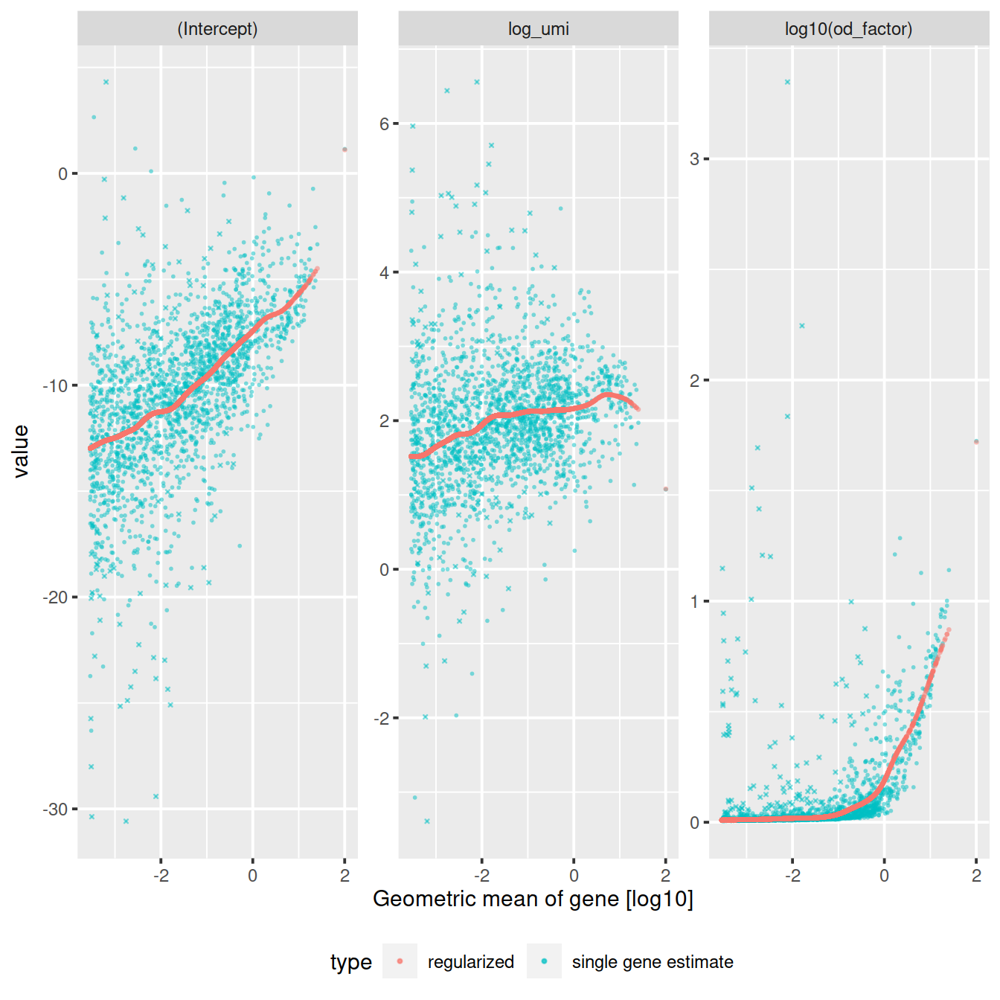
Inspect model
We will look at several genes in more detail.
## ensembl_gene_id external_gene_name chromosome_name
## ENSG00000147403 ENSG00000147403 RPL10 X
## ENSG00000251562 ENSG00000251562 MALAT1 11
## ENSG00000087086 ENSG00000087086 FTL 19
## start_position end_position strand Symbol Type
## ENSG00000147403 154389955 154409168 1 RPL10 Gene Expression
## ENSG00000251562 65497688 65506516 1 MALAT1 Gene Expression
## ENSG00000087086 48965309 48966879 1 FTL Gene Expression
## mean detected gene_sparsity
## ENSG00000147403 48.85548 99.28030 0.011540874
## ENSG00000251562 193.05529 99.09786 0.005352289
## ENSG00000087086 15.48621 96.42481 0.085532093sctransform::plot_model(vst_out,
counts,
c('ENSG00000251562', 'ENSG00000147403', 'ENSG00000087086'),
plot_residual = TRUE)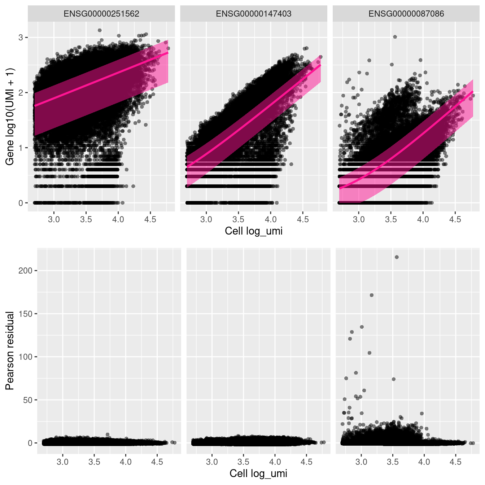
sctransform::plot_model(vst_out,
counts,
c('ENSG00000087086'),
plot_residual = TRUE,
show_nr = TRUE,
arrange_vertical = FALSE)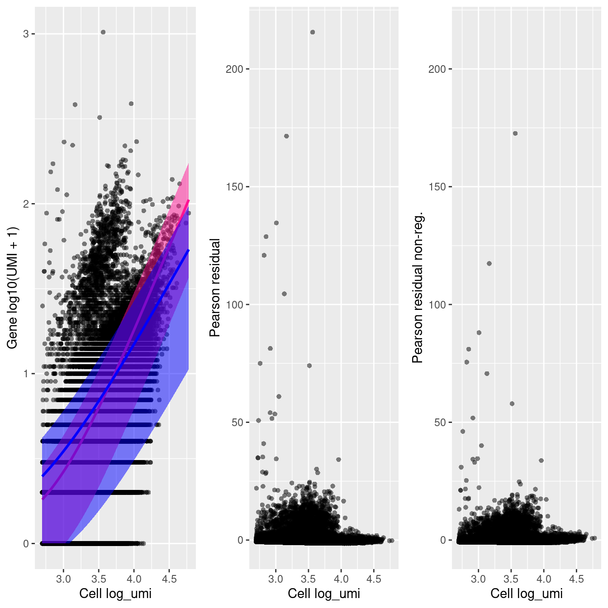
# Error in seq_len(n) : argument must be coercible to non-negative integer
rowData(sce) %>% as.data.frame %>% filter(Symbol %in% c('GNLY', 'S100A9'))
#sctransform::plot_model(vst_out, counts, c('ENSG00000115523', 'ENSG00000163220'), plot_residual = TRUE, show_nr = TRUE)
sctransform::plot_model(vst_out, counts, c('ENSG00000115523'), plot_residual = TRUE, show_nr = TRUE)
# ok # sctransform::plot_model(vst_out, counts, c('ENSG00000087086'), plot_residual = TRUE, show_nr = TRUE)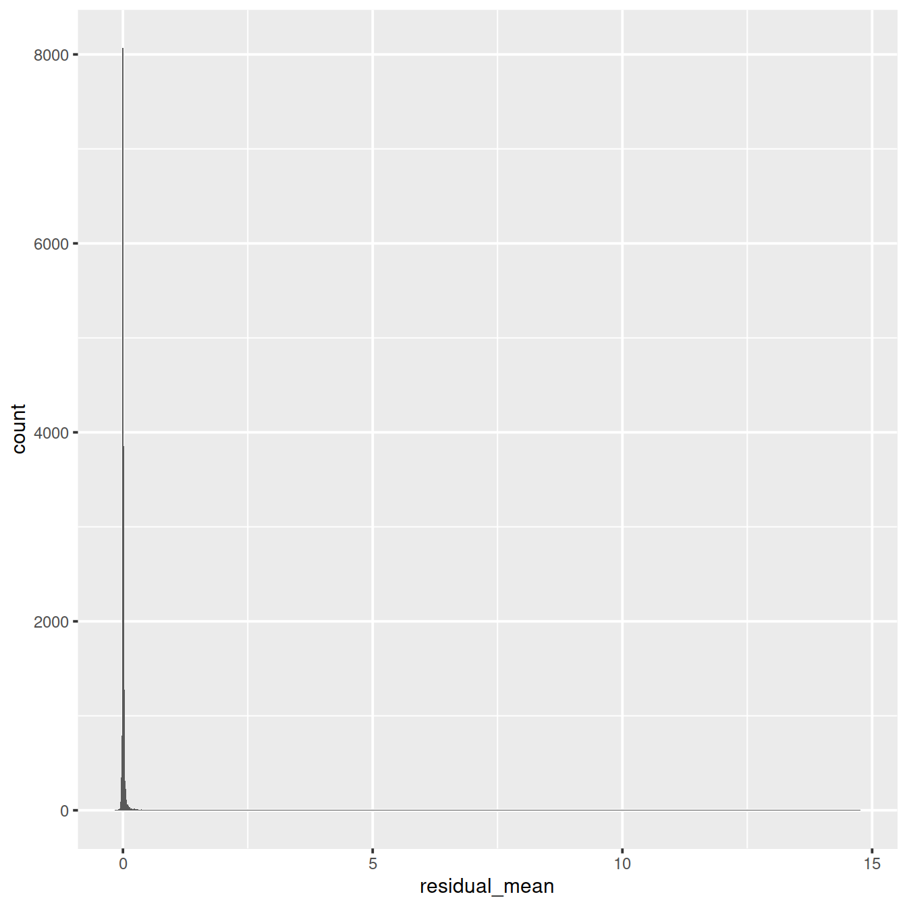
ggplot(vst_out$gene_attr, aes(residual_variance)) + geom_histogram(binwidth=0.1) +
geom_vline(xintercept=1, color='red') + xlim(0, 10)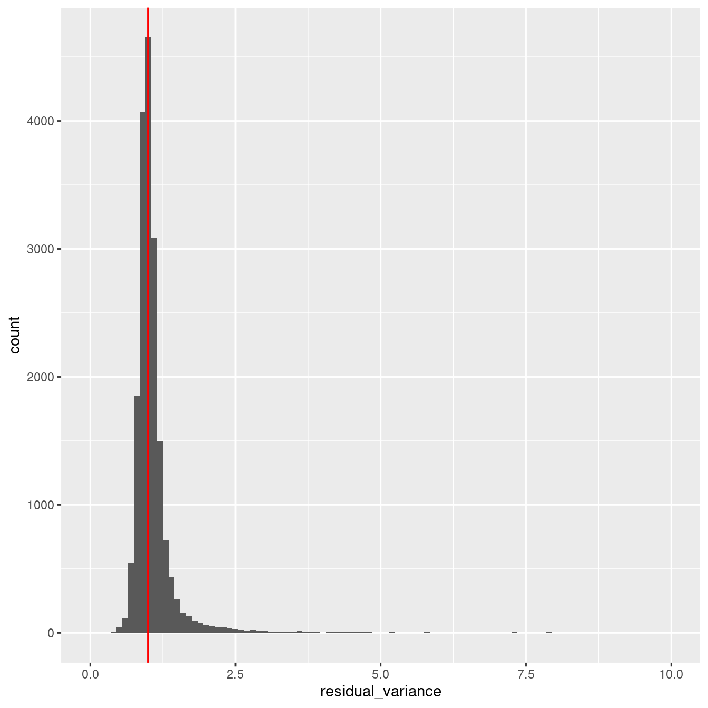
ggplot(vst_out$gene_attr, aes(x=residual_mean, y=residual_variance)) +
geom_point(alpha=0.3, shape=16) +
xlim(0, 2.5) +
ylim(0, 10) +
geom_density_2d()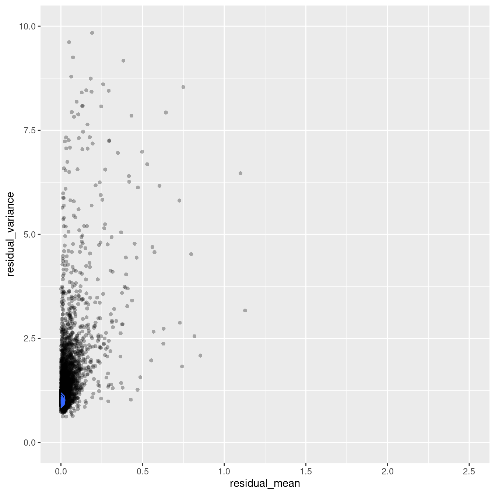
ggplot(vst_out$gene_attr,
aes(log10(gmean), residual_variance)) +
geom_point(alpha=0.3, shape=16) +
geom_density_2d(size = 0.3)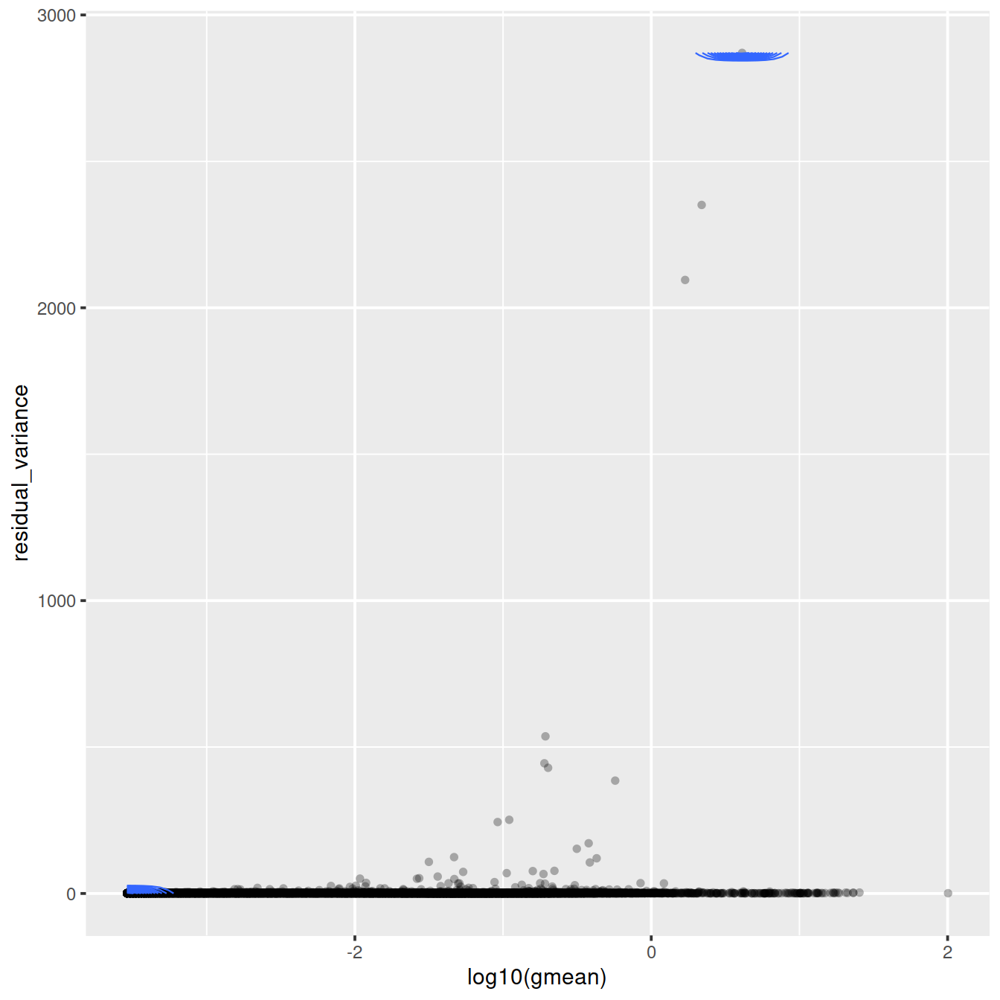
dd <- vst_out$gene_attr %>%
arrange(-residual_variance) %>%
slice_head(n = 22) %>%
mutate(across(where(is.numeric), round, 2))
dd %>% tibble::rownames_to_column("ensembl_gene_id") %>%
left_join(as.data.frame(rowData(sce))[,c("ensembl_gene_id", "Symbol")],
by = "ensembl_gene_id") %>%
DT::datatable(rownames = FALSE)6.3.2 Hca
Load object.
setName <- "hca"
setSuf <- "_5kCellPerSpl"
tmpFn <- sprintf("%s/%s/Robjects/%s_sce_nz_postDeconv%s.Rds",
projDir, outDirBit, setName, setSuf)
sce_hca <- readRDS(tmpFn)
sce <- sce_hca
counts <- counts(sce)
class(counts)## [1] "dgCMatrix"
## attr(,"package")
## [1] "Matrix"Inspect data
gene_attr <- data.frame(mean = rowMeans(counts),
detection_rate = rowMeans(counts > 0),
var = apply(counts, 1, var))
gene_attr$log_mean <- log10(gene_attr$mean)
gene_attr$log_var <- log10(gene_attr$var)
rownames(gene_attr) <- rownames(counts)
cell_attr <- data.frame(n_umi = colSums(counts),
n_gene = colSums(counts > 0))
rownames(cell_attr) <- colnames(counts)Mean-variance relationship
# add the expected detection rate under Poisson model
x = seq(from = -3, to = 2, length.out = 1000)
poisson_model <- data.frame(log_mean = x,
detection_rate = 1 - dpois(0, lambda = 10^x))
ggplot(gene_attr, aes(log_mean, detection_rate)) +
geom_point(alpha=0.3, shape=16) +
geom_line(data=poisson_model, color='red') +
theme_gray(base_size = 8)
Mean-detection-rate relationship
ggplot(cell_attr, aes(n_umi, n_gene)) +
geom_point(alpha=0.3, shape=16) +
geom_density_2d(size = 0.3)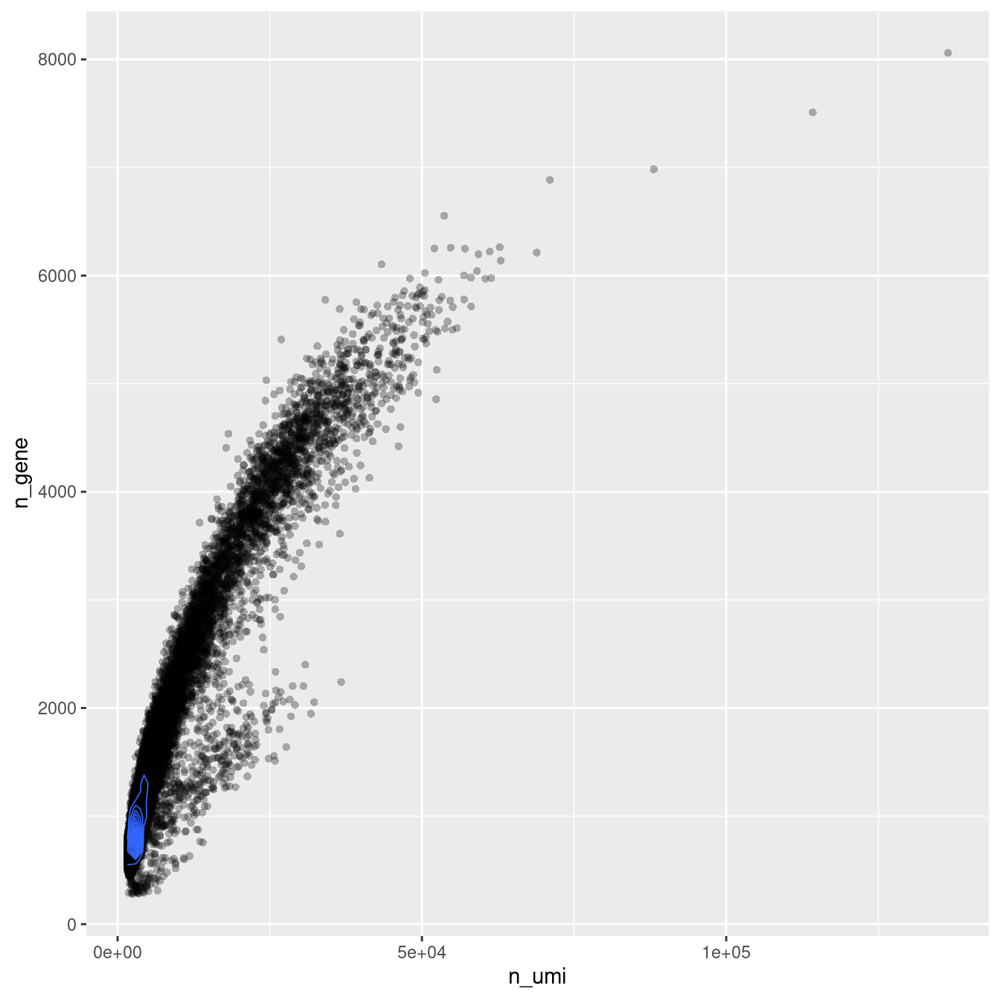
# We use the Future API for parallel processing; set parameters here
future::plan(strategy = 'multicore', workers = 4)
options(future.globals.maxSize = 10 * 1024 ^ 3)
set.seed(44)
vst_out <- sctransform::vst(counts,
latent_var = c('log_umi'),
return_gene_attr = TRUE,
return_cell_attr = TRUE,
show_progress = FALSE)
sctransform::plot_model_pars(vst_out)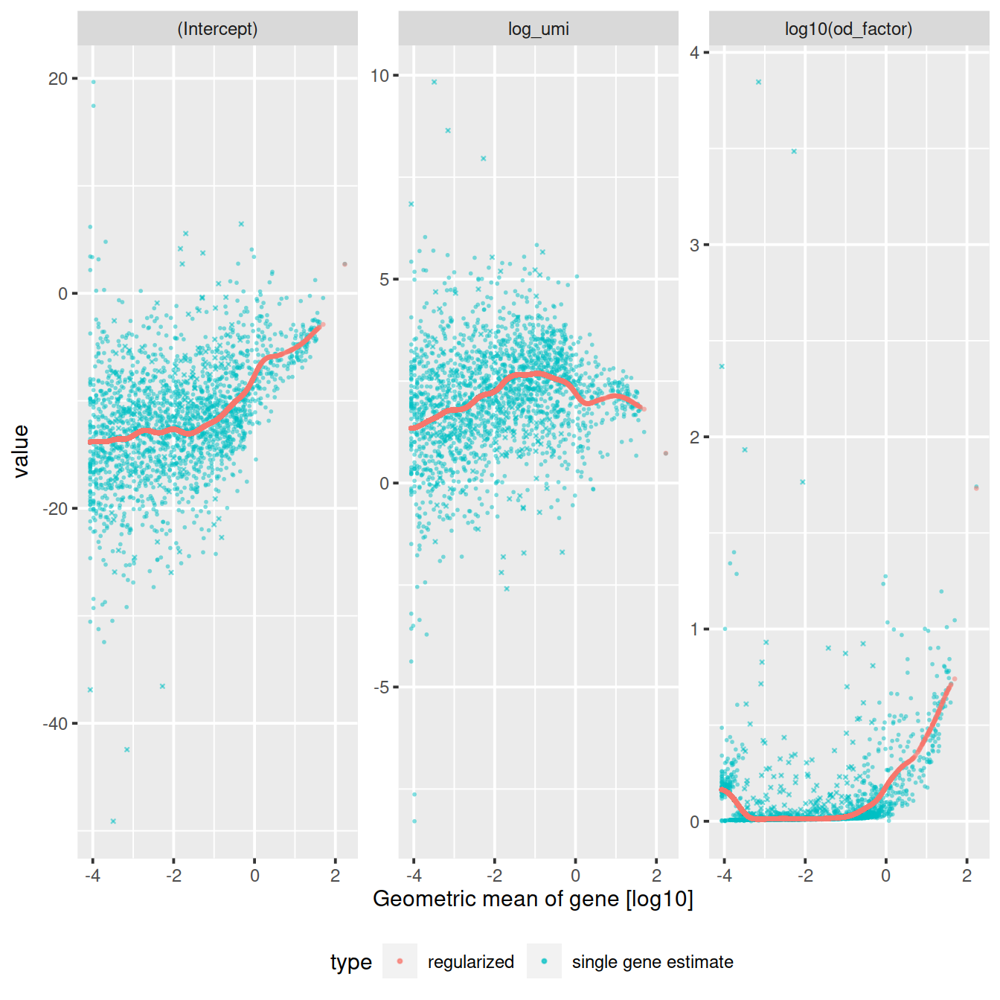
Inspect model
We will look at several genes in more detail.
## ensembl_gene_id external_gene_name chromosome_name
## ENSG00000147403 ENSG00000147403 RPL10 X
## ENSG00000251562 ENSG00000251562 MALAT1 11
## ENSG00000087086 ENSG00000087086 FTL 19
## start_position end_position strand Symbol Type
## ENSG00000147403 154389955 154409168 1 RPL10 Gene Expression
## ENSG00000251562 65497688 65506516 1 MALAT1 Gene Expression
## ENSG00000087086 48965309 48966879 1 FTL Gene Expression
## mean detected gene_sparsity
## ENSG00000147403 48.85548 99.28030 0.007196991
## ENSG00000251562 193.05529 99.09786 0.009021354
## ENSG00000087086 15.48621 96.42481 0.035751887sctransform::plot_model(vst_out,
counts,
c('ENSG00000251562', 'ENSG00000147403', 'ENSG00000087086'),
plot_residual = TRUE)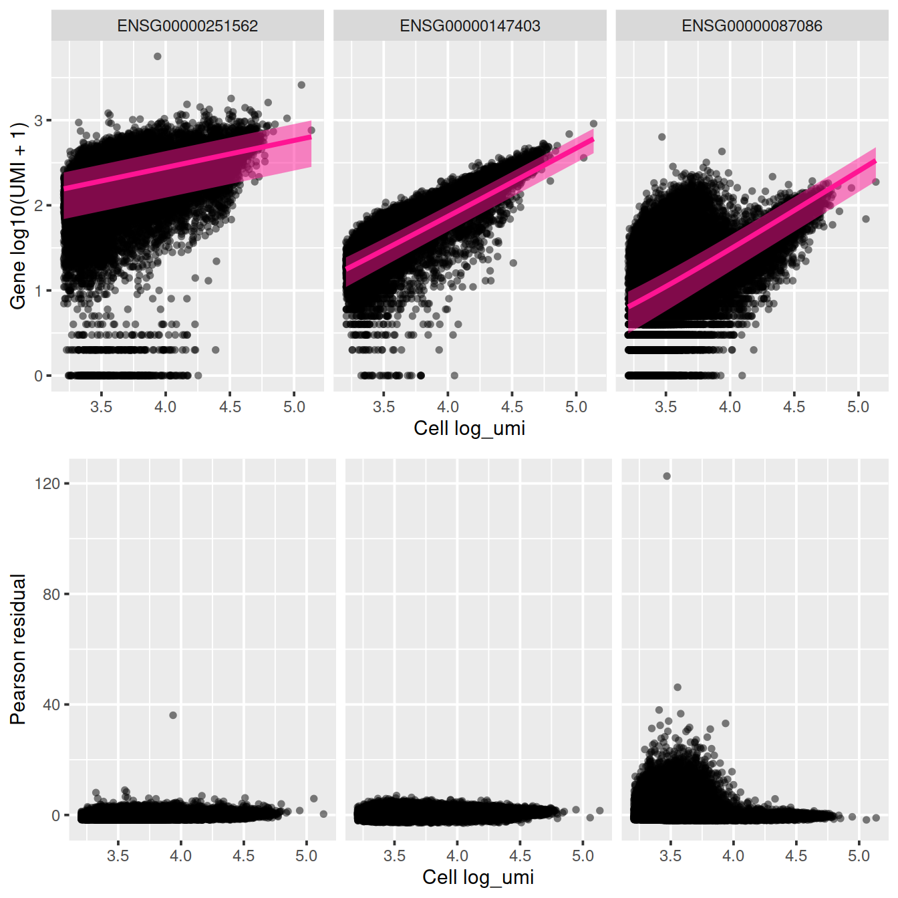
sctransform::plot_model(vst_out,
counts,
c('ENSG00000087086'),
plot_residual = TRUE,
show_nr = TRUE,
arrange_vertical = FALSE)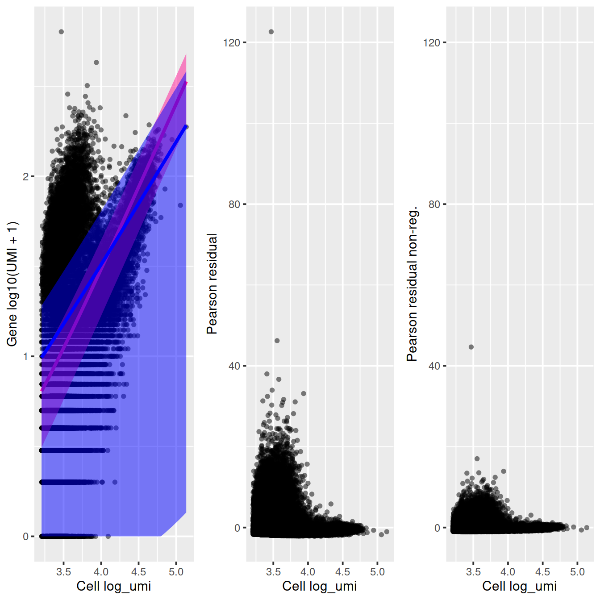
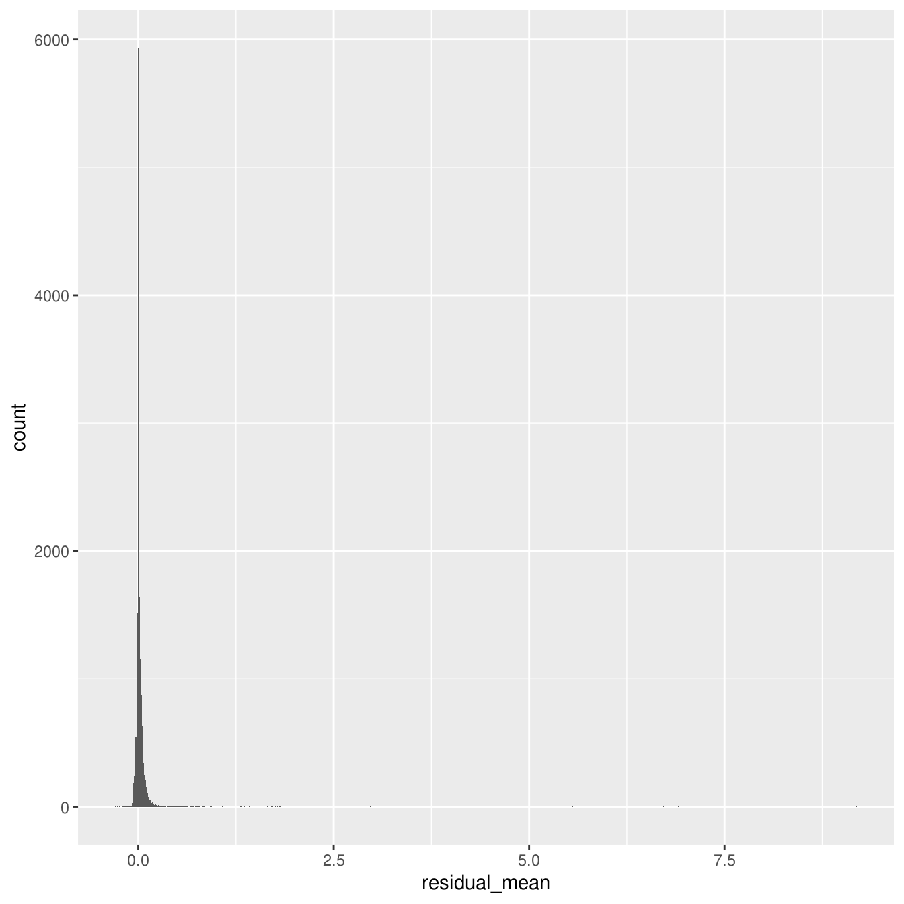
ggplot(vst_out$gene_attr, aes(residual_variance)) + geom_histogram(binwidth=0.1) +
geom_vline(xintercept=1, color='red') + xlim(0, 10)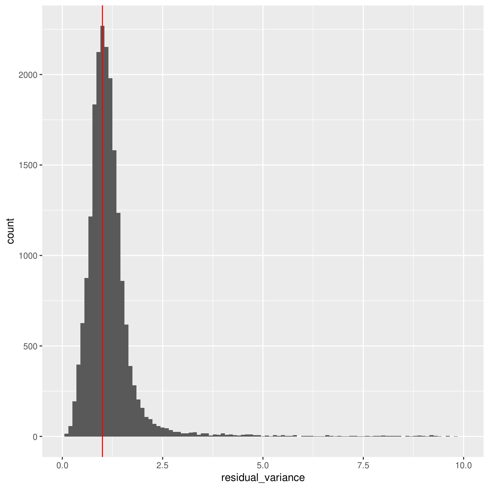
ggplot(vst_out$gene_attr, aes(x=residual_mean, y=residual_variance)) +
geom_point(alpha=0.3, shape=16) +
xlim(0, 2.5) +
ylim(0, 10) +
geom_density_2d()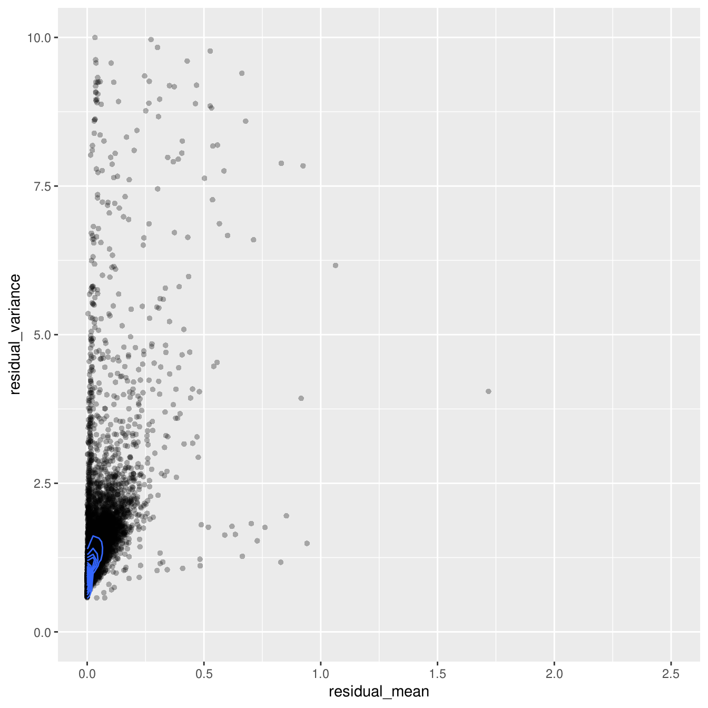
ggplot(vst_out$gene_attr, aes(log10(gmean), residual_variance)) +
geom_point(alpha=0.3, shape=16) +
geom_density_2d(size = 0.3)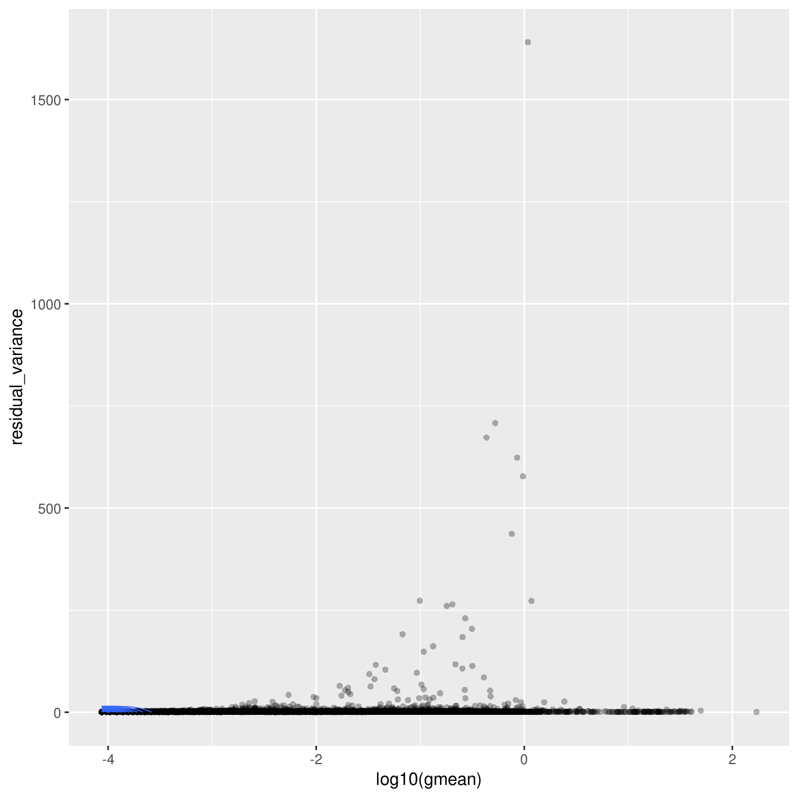
#dd <- head(round(vst_out$gene_attr[order(-vst_out$gene_attr$residual_variance), ], 2), 22)
dd <- vst_out$gene_attr %>%
arrange(-residual_variance) %>%
slice_head(n = 22) %>%
mutate(across(where(is.numeric), round, 2))
dd %>% tibble::rownames_to_column("ensembl_gene_id") %>%
left_join(as.data.frame(rowData(sce))[,c("ensembl_gene_id", "Symbol")],
"ensembl_gene_id") %>%
DT::datatable(rownames = FALSE)6.4 Session information
## R version 4.0.3 (2020-10-10)
## Platform: x86_64-pc-linux-gnu (64-bit)
## Running under: CentOS Linux 8
##
## Matrix products: default
## BLAS: /opt/R/R-4.0.3/lib64/R/lib/libRblas.so
## LAPACK: /opt/R/R-4.0.3/lib64/R/lib/libRlapack.so
##
## locale:
## [1] LC_CTYPE=en_GB.UTF-8 LC_NUMERIC=C
## [3] LC_TIME=en_GB.UTF-8 LC_COLLATE=en_GB.UTF-8
## [5] LC_MONETARY=en_GB.UTF-8 LC_MESSAGES=en_GB.UTF-8
## [7] LC_PAPER=en_GB.UTF-8 LC_NAME=C
## [9] LC_ADDRESS=C LC_TELEPHONE=C
## [11] LC_MEASUREMENT=en_GB.UTF-8 LC_IDENTIFICATION=C
##
## attached base packages:
## [1] stats4 parallel stats graphics grDevices utils datasets
## [8] methods base
##
## other attached packages:
## [1] Cairo_1.5-12.2 edgeR_3.32.1
## [3] DelayedArray_0.16.3 RColorBrewer_1.1-2
## [5] reticulate_1.18 purrr_0.3.4
## [7] tidyr_1.1.3 tibble_3.1.1
## [9] broom_0.7.6 leiden_0.3.7
## [11] cluster_2.1.0 dynamicTreeCut_1.63-1
## [13] bluster_1.0.0 fossil_0.4.0
## [15] shapefiles_0.7 foreign_0.8-80
## [17] maps_3.3.0 sp_1.4-5
## [19] clustree_0.4.3 ggraph_2.0.5
## [21] pheatmap_1.0.12 harmony_1.0
## [23] Rcpp_1.0.6 batchelor_1.6.3
## [25] SeuratObject_4.0.0 Seurat_4.0.1
## [27] limma_3.46.0 ggfortify_0.4.11
## [29] BiocSingular_1.6.0 scuttle_1.0.4
## [31] robustbase_0.93-7 mixtools_1.2.0
## [33] irlba_2.3.3 biomaRt_2.46.3
## [35] Matrix_1.2-18 igraph_1.2.6
## [37] DropletUtils_1.10.3 scater_1.18.6
## [39] ggplot2_3.3.3 scran_1.18.7
## [41] SingleCellExperiment_1.12.0 SummarizedExperiment_1.20.0
## [43] Biobase_2.50.0 GenomicRanges_1.42.0
## [45] GenomeInfoDb_1.26.7 IRanges_2.24.1
## [47] S4Vectors_0.28.1 BiocGenerics_0.36.1
## [49] MatrixGenerics_1.2.1 matrixStats_0.58.0
## [51] dplyr_1.0.5 DT_0.18
## [53] knitr_1.32
##
## loaded via a namespace (and not attached):
## [1] rappdirs_0.3.1 scattermore_0.7
## [3] R.methodsS3_1.8.1 bit64_4.0.5
## [5] R.utils_2.10.1 data.table_1.14.0
## [7] rpart_4.1-15 RCurl_1.98-1.3
## [9] generics_0.1.0 cowplot_1.1.1
## [11] RSQLite_2.2.6 RANN_2.6.1
## [13] future_1.21.0 bit_4.0.4
## [15] spatstat.data_2.1-0 xml2_1.3.2
## [17] httpuv_1.5.5 isoband_0.2.4
## [19] assertthat_0.2.1 viridis_0.5.1
## [21] xfun_0.22 hms_1.0.0
## [23] jquerylib_0.1.3 evaluate_0.14
## [25] promises_1.1.1 DEoptimR_1.0-8
## [27] fansi_0.4.2 progress_1.2.2
## [29] dbplyr_2.0.0 DBI_1.1.1
## [31] htmlwidgets_1.5.3 spatstat.geom_2.1-0
## [33] ellipsis_0.3.1 crosstalk_1.1.1
## [35] backports_1.2.1 bookdown_0.21
## [37] deldir_0.2-10 sparseMatrixStats_1.2.1
## [39] vctrs_0.3.7 ROCR_1.0-11
## [41] abind_1.4-5 cachem_1.0.4
## [43] withr_2.4.2 ggforce_0.3.3
## [45] sctransform_0.3.2.9005 prettyunits_1.1.1
## [47] goftest_1.2-2 segmented_1.3-3
## [49] lazyeval_0.2.2 crayon_1.4.1
## [51] labeling_0.4.2 pkgconfig_2.0.3
## [53] tweenr_1.0.2 nlme_3.1-149
## [55] vipor_0.4.5 rlang_0.4.10
## [57] globals_0.14.0 lifecycle_1.0.0
## [59] miniUI_0.1.1.1 BiocFileCache_1.14.0
## [61] rsvd_1.0.3 polyclip_1.10-0
## [63] lmtest_0.9-38 Rhdf5lib_1.12.1
## [65] zoo_1.8-9 beeswarm_0.2.3
## [67] ggridges_0.5.3 png_0.1-7
## [69] viridisLite_0.3.0 bitops_1.0-6
## [71] R.oo_1.24.0 KernSmooth_2.23-17
## [73] rhdf5filters_1.2.0 blob_1.2.1
## [75] DelayedMatrixStats_1.12.3 stringr_1.4.0
## [77] parallelly_1.24.0 readr_1.4.0
## [79] beachmat_2.6.4 scales_1.1.1
## [81] memoise_2.0.0 magrittr_2.0.1
## [83] plyr_1.8.6 ica_1.0-2
## [85] zlibbioc_1.36.0 compiler_4.0.3
## [87] dqrng_0.2.1 fitdistrplus_1.1-3
## [89] XVector_0.30.0 listenv_0.8.0
## [91] patchwork_1.1.1 pbapply_1.4-3
## [93] MASS_7.3-53 mgcv_1.8-33
## [95] tidyselect_1.1.0 stringi_1.5.3
## [97] highr_0.8 yaml_2.2.1
## [99] askpass_1.1 locfit_1.5-9.4
## [101] ggrepel_0.9.1 grid_4.0.3
## [103] sass_0.3.1 tools_4.0.3
## [105] future.apply_1.7.0 rstudioapi_0.13
## [107] gridExtra_2.3 farver_2.1.0
## [109] Rtsne_0.15 digest_0.6.27
## [111] shiny_1.5.0 later_1.1.0.1
## [113] RcppAnnoy_0.0.18 httr_1.4.2
## [115] AnnotationDbi_1.52.0 kernlab_0.9-29
## [117] colorspace_2.0-0 XML_3.99-0.5
## [119] tensor_1.5 splines_4.0.3
## [121] uwot_0.1.10 statmod_1.4.35
## [123] spatstat.utils_2.1-0 graphlayouts_0.7.1
## [125] plotly_4.9.3 xtable_1.8-4
## [127] jsonlite_1.7.2 tidygraph_1.2.0
## [129] R6_2.5.0 pillar_1.6.0
## [131] htmltools_0.5.1.1 mime_0.10
## [133] glue_1.4.2 fastmap_1.1.0
## [135] BiocParallel_1.24.1 BiocNeighbors_1.8.2
## [137] codetools_0.2-16 utf8_1.2.1
## [139] lattice_0.20-41 bslib_0.2.4
## [141] spatstat.sparse_2.0-0 ResidualMatrix_1.0.0
## [143] curl_4.3 ggbeeswarm_0.6.0
## [145] openssl_1.4.3 survival_3.2-7
## [147] rmarkdown_2.7 munsell_0.5.0
## [149] rhdf5_2.34.0 GenomeInfoDbData_1.2.4
## [151] HDF5Array_1.18.1 reshape2_1.4.4
## [153] gtable_0.3.0 spatstat.core_2.1-2